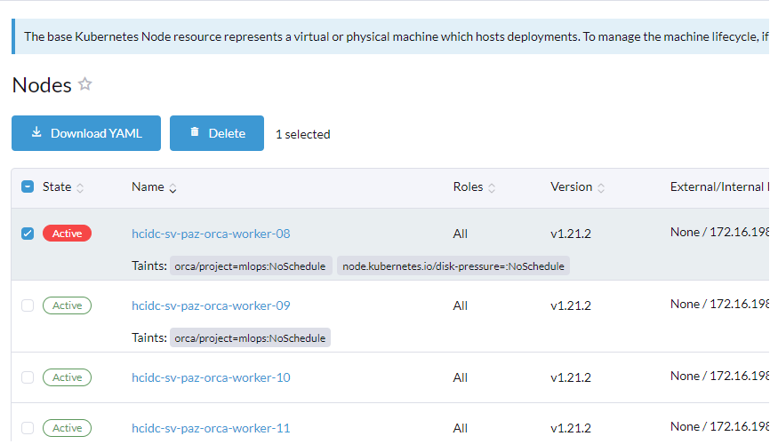

$ kubectl get all -n code-server
NAME READY STATUS RESTARTS AGE
pod/code-server-5fc775748c-nbmsr 0/1 Init:CrashLoopBackOff 5 4m31s
NAME TYPE CLUSTER-IP EXTERNAL-IP PORT(S) AGE
service/code-server ClusterIP 10.79.240.159 <none> 8080/TCP 13m
NAME READY UP-TO-DATE AVAILABLE AGE
deployment.apps/code-server 0/1 1 0 13m
NAME DESIRED CURRENT READY AGE
replicaset.apps/code-server-5879f94445 0 0 0 7m13s
replicaset.apps/code-server-5fc775748c 1 1 0 4m31s
replicaset.apps/code-server-67d7c4f6cd 0 0 0 13m
# orca
$ kubectl version --short | grep -i server
Flag --short has been deprecated, and will be removed in the future. The --short output will become the default.
WARNING: version difference between client (1.24) and server (1.21) exceeds the supported minor version skew of +/-1
Server Version: v1.21.12
# black
$ kubectl version --short | grep -i server
Flag --short has been deprecated, and will be removed in the future. The --short output will become the default.
WARNING: version difference between client (1.24) and server (1.21) exceeds the supported minor version skew of +/-1
Server Version: v1.21.13-eks-84b4fe6
kubectl get resourcequota -n "namespace"
kubectl config get-contexts
kubectl config use-context "context name"
kubectl config view --minify -o jsonpath='{.clusters[].name}'
# 레이블 추가
kubectl label nodes <your-node-name> disktype=ssd
# 레이블 확인
kubectl get nodes --show-labels
kubectl delete pods --field-selector=status.phase=Failed -A
kubectl describe node/hcidc-sv-paz-orca-worker-08
kubectl uncordon hcidc-sv-paz-orca-worker-08
kubectl describe nodes "nodes-name"

kubectl taint nodes hcidc-sv-paz-orca-worker-08 node.kubernetes.io/disk-pressure-
ssh uname@IP_or_hostname (login to the worker node )
df -h (to check the disk usage)
rm -rf folder_name (delete the unwanted folder,you are forcefully deleting the file, so make sure you really want to delete it).
kubectl edit service/ocr-service -n mlops
kubectl edit Ingress/mlops-ingress -n mlops
kubectl edit endpoints/ocr-service -n mlops
kubectl edit service/ingress-nginx-controller -n ingress-nginx
https://kubernetes.io/ko/docs/concepts/services-networking/service-traffic-policy/
kubectl version --short
Flag --short has been deprecated, and will be removed in the future. The --short output will become the default.
Client Version: v1.24.1
Kustomize Version: v4.5.4
Server Version: v1.21.14-eks-6d3986b
WARNING: version difference between client (1.24) and server (1.21) exceeds the supported minor version skew of +/-1
aws eks describe-cluster --name black --region ap-northeast-2
{
"cluster": {
"name": "black",
"arn": "arn:aws:eks:ap-northeast-2:258092954359:cluster/black",
"createdAt": "2022-08-25T15:46:42.441000+09:00",
"version": "1.21",
"endpoint": "https://C711862DD49EF2914B647C7921AC60AC.gr7.ap-northeast-2.eks.amazonaws.com",
"roleArn": "arn:aws:iam::258092954359:role/black-cluster-20220825064630881900000007",
"resourcesVpcConfig": {
"subnetIds": [
"subnet-05d5ecf440385c7e8",
"subnet-04eae96a716680c0d",
"subnet-00f80af8e448a8e94",
"subnet-0b7d86c89170e2b16",
"subnet-0dda057aa012c87cd",
"subnet-0d13e4d3b276e382e",
"subnet-09f35944ad3b7f1b2",
"subnet-01977f8d12d297273"
],
"securityGroupIds": [
"sg-083204ef197bed7d8"
],
"clusterSecurityGroupId": "sg-01ee12c4df0f3adb4",
"vpcId": "vpc-0223d4132cf21dfe6",
"endpointPublicAccess": true,
"endpointPrivateAccess": true,
"publicAccessCidrs": [
"0.0.0.0/0"
]
},
"kubernetesNetworkConfig": {
"serviceIpv4Cidr": "10.79.0.0/16",
"ipFamily": "ipv4"
},
"logging": {
"clusterLogging": [
{
"types": [
"api",
"audit",
"authenticator"
],
"enabled": true
},
{
"types": [
"controllerManager",
"scheduler"
],
"enabled": false
}
]
},
"identity": {
"oidc": {
"issuer": "https://oidc.eks.ap-northeast-2.amazonaws.com/id/C711862DD49EF2914B647C7921AC60AC"
}
},
"status": "ACTIVE",
"certificateAuthority": {
"data": "LS0tLS1CRUdJTiBDRVJUSUZJQ0FURS0tLS0tCk1JSUM1ekNDQWMrZ0F3SUJBZ0lCQURBTkJna3Foa2lHOXcwQkFRc0ZBREFWTVJNd0VRWURWUVFERXdwcmRXSmwKY201bGRHVnpNQjRYRFRJeU1EZ3lOVEEyTlRJeE4xb1hEVE15TURneU1qQTJOVEl4TjFvd0ZURVRNQkVHQTFVRQpBeE1LYTNWaVpYSnVaWFJsY3pDQ0FTSXdEUVlKS29aSWh2Y05BUUVCQlFBRGdnRVBBRENDQVFvQ2dnRUJBS3NFCktyK0k0eVhlN0Y4eDU5bkhHK3lwZjhheDhJWVdJenBpVHZVRGVCNmNmYWRJM0pTMDhEeWtPMEF5cEswVjBrMFIKOGRqQjdIMEVHOTJnOFlIbG5XdDZ0OVk3VE05NzhHVk9PR3Y2ZVBSUFFRRGNvL2dSam9MTTR3RExhaVJYUndOSQpnbEM5ZWd6eWtxRWYxYWwyeG5UY0RRUWZvcG5EanZ2Snd1THpPbmRucEU1M3FwS1lvNTh3NktZWjFjVHlHMHFaCnVWRHE0M3dObC9WcW5TL3BzUFQxRkQ5S1laNEhnNXJnMU9MRGhTQy8rSVdUb2xFUjB2WWZzQk5PVy80dVNFU2kKMmUwbjJJaVpyVzJVT1dlRTlScXV3bnRNY2h0U1pYWWNDKzNzV3hUcklvZE1pek9lRWg1aGZaa1g2ZFZFSVZ4egphT2NBRGNjZmxiUUQvQ2xGQ3RFQ0F3RUFBYU5DTUVBd0RnWURWUjBQQVFIL0JBUURBZ0trTUE4R0ExVWRFd0VCCi93UUZNQU1CQWY4d0hRWURWUjBPQkJZRUZIRmJISTFoSHRGZjVpN1VKZ2srZS9Da3FXQVBNQTBHQ1NxR1NJYjMKRFFFQkN3VUFBNElCQVFCbmdSVHBTT2t1WFFoVEJwTjBUTVQ2alA4NWpkdGZJRmZ6NWFXMDZpVlppM3ZnZ1lOMApmZ05yczZrV3FsYXdVVWRtYm5EdmZEU1kwWXh6dzVMKytZaDlMcURpNjdvbWhLdmJOaEFoQTN4dDgvL2tUdVZQClVuVGVsWWE0YTdHL0VBWGkyZlYyL3B2c2NCWlV5WWt5eUtxVjlGMlQxRnhBWkhVT3p1QVBTc2xjOVhjQy9wdkQKalVXTWN3ci8yN0lxUzhzcTRRN243c2NJa2JZMURNREpxWDNUVFVRWlhucTgvY1pCUFVzRHV2RzRJaDgzMmVMYQpFS0N1RTJmVXhXN3NOdU5rMEswcG5iT2duVjJBVVdnOEFFbTFvdlhUb2hGeUY3UmtMd1oxZ2lRbjdIVzVmNU1TClh2TUVSS05kU0p2R0szVGoxMWY5TmtET0IrekpvMnVvU3FNZQotLS0tLUVORCBDRVJUSUZJQ0FURS0tLS0tCg=="
},
"platformVersion": "eks.11",
"tags": {
"Terraform": "true",
"Environment": "stg"
},
"encryptionConfig": [
{
"resources": [
"secrets"
],
"provider": {
"keyArn": "arn:aws:kms:ap-northeast-2:258092954359:key/ac5e33f5-88ad-44fa-a52c-69e93fe97352"
}
}
]
}
}